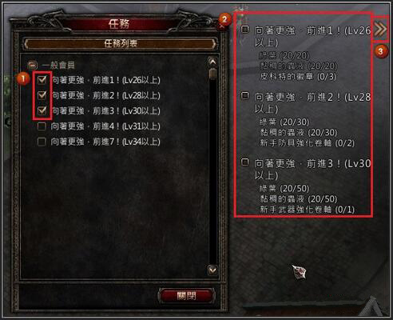
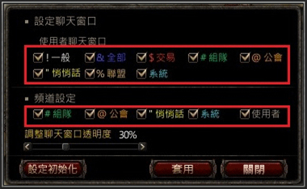

遊戲介面
角色欄位介紹
- 使用快捷鍵【C】可以打開角色訊息視窗
- 角色介面提供查看名稱、等級、經驗值、職業和能力值(力量、敏捷、智力、體力) 訊息，AC(防禦力)、負重、飽食度、善惡值、是否已經加入公會等等。
- 狩獵怪物可增加善值，角色名稱會慢慢變為藍色。
- 狩獵玩家會增加惡值。角色名稱會慢慢變為紅色，並附加死亡噴裝率提高等等懲罰。
一.人物組隊
- 使用快捷鍵【F】可以打開好友介面。
- 利用介面內搜尋好友，並使用[組隊邀請]鍵或輸入"/組隊邀請 角色名稱"命令語來邀請組隊。
- 組隊完成後可在組隊視窗看到組隊成員及該角色現有的HP/MP狀況。
- 組隊後你與隊友會顯示於地圖及迷你地圖中。而當一起擊殺怪物時會自動分享經驗值和善惡值。(組隊成員需同一畫面內才能分享)
- 最小化：
按下最小化後立即隱藏組隊目錄。 - 組隊中的指令選項：
在組隊隊員名稱上點擊[鼠標右鍵]即打開組隊互動選單。
(1)踢出組隊 - 把該成員踢出隊伍。(只有隊長才能使用)
(2)退出組隊 - 退出組隊。
(3)悄悄話 - 與該成員進行悄悄話。
(4)關閉視窗 - 關閉視窗。 - 點擊[鼠標左鍵]並拖曳，可以把視窗移動到任意位置。
二.戰爭點數
- 戰爭點數可通過PVP來獲得。
- 被其他角色攻擊至死時，該角色的戰爭點數會按一定比例被掠奪。
- 角色的戰爭點數在0以下時將無法獲得。
- 加入公會後，戰爭中被對方公會成員攻擊至死時，狩獵點數也會被掠奪。
- 戰爭中勝利的公會會員會從戰敗的公會，得到一定的戰爭點數和狩獵點數。
三.狩獵點數
- 狩獵點數通過狩獵怪物獲得。
- 狩獵時，根據獲得的經驗值按一定比例獲得狩獵點數。
- 加入公會後，獲得的點數10%將轉換為會長的點數。
四.綜合點數
- 綜合點數即表示角色的活躍值
- 點數分為狩獵點數和戰爭點數，綜合點數是兩種點數的總和。新建角色的點數值為0。
- 加入公會時，自身的點數會跟隨所屬公會的點數上升。
- 退出時，自身的點數也會從公會的點數中被扣除。
- 所有點數會進行每日更新，也會有稍微自然減少。
五.人物額外能力
- 人物額外能力值代表角色的戰鬥能力，數值越高，角色續戰能力越高。
- 【AC】為防禦力：可抵抗物理傷害。
- 【MR】為魔法防禦：可抵抗魔法傷害。
- 【飽腹度】100%可增加些許攻擊力，死亡將降低飽腹度(商店可購買麵包提高飽食度)
- 【負重】超過50%將影響回復HP/MP的數值，負重越高影響越大
人物負重顯示
人物飽腹度顯示
物品欄
- 可使用快捷鍵【Tab】開啟物品欄視窗，查看裝備和持有物品。
- 物品欄分為全部、裝備道具、消費道具、其他道具，點擊每一種類的標籤即可顯示該類形的所有道具。
- 上圖選項2表示的是所有道具儲存空間(100格)中的使用中的空間個數，以及已使用的負重量百分比。
- 上圖選項3為垃圾桶，可以把需要刪除的道具拖放入垃圾桶即可刪除道具。道具刪除後將無法復原，請慎重使用。
- 在物品欄中雙擊[鼠標左鍵]或點擊[鼠標右鍵]，即可使用/解除道具。
一.物品制作
1.製作NPC
(1)通過村莊裡的鐵匠進行對話可進行查看及製作物品。(2)點擊需要製作的物品後，可以查看製作的道具需要的材料，並可點擊[製作]即開製作道具。但是材料不足時將無法進行製作。
二.強化裝備
- 強化裝備可增強道具能力，對於狩獵與PK皆能發揮莫大功效。
- 於遊戲中需使用強化卷軸進行強化，而強化卷軸分為武器強化卷軸和防具強化卷軸。
- 武器強化後可提高攻擊力，防具強化後可提高防禦力。
- 在物品欄使用強化卷軸後，點擊需要強化的裝備。但是裝備下的道具不能進行強化。
- 強化武器安定值為+6，而強化防具安定值為+4。
- 部分裝備強化後將有額外的能力。
- 如果裝備於安定值後繼續進行強化，將有機會強化失敗。強化失敗時強化物品與道具將會消失。
三.拾取道具
- 狩獵怪物成功後，怪物有機會掉落物品。
- 把鼠標移動到掉落的道具上，點擊鼠標左鍵將可拾取怪物掉落的道具放進物品欄裡。而每點擊一次只能拾取一個道具。
- 可利用快捷鍵【F4】拾取掉落在身邊的道具。
- 當道具重疊時，把鼠標移動到道具上點擊 鼠標右鍵即可按順序選擇道具後，點擊鼠標左鍵進行拾取物品。
- 使用遊戲裡的[小精靈]亦會自動協助玩家拾取套獵怪物後掉落的物品。
四.其他道具
- 其他道具中會顯示任務物品、材料等等非使用的道具。
- 可使用的箱子類道具亦只能一次性使用。
- 其他道具顯示種類：箱子類道具、符文、CP、材料道具、任務道具。
五.自動道具

- 在遊戲選項裡設定中開啟自動使用道具系統後，將自動使用快捷欄中的自動物品。
- 系統會根據[F5]~[F12]快捷欄的順序優先使用自動道具。
- 自動道具類型：
(1)傳說的小型體力恢復藥水，傳說的中型體力恢復藥水，傳說的大型體力恢復藥水
(2)傳說的回城卷軸。 - 自動使用藥水及回城卷可依照個人喜好設定。
開啟自動使用道具系統後，會於血量條出現設定指針標記，可使用鼠標移動標記至所需的位置即完成設定。
- HP恢復
調整血量條上方的黃色指針標記後，如血量低於指針標記，系統將會自動使用快捷欄中的自動藥水。- 自動歸還
調整血量條下方的紅色指針標記後，如血量低於指針標記，系統將會自動使用快捷欄中的歸還卷軸。六.消費道具
- 如擁有多於一個的消費道具類的物品時，系統將會自動於道具圖示左下方進行統計擁有數量。
- 把消耗道具放置於快捷欄後，將能反覆使用物品直至物品數量用盡。
- 部分道具使用後需冷卻，需待冷卻時間結束才能再次使用。
- 消費道具顯示種類：藥水道具，卷軸道具
七.套裝系統
套裝是把可以裝備以一套的形式來儲存，按下快捷鍵或點擊套裝立即更換設定的套裝。八.基本裝備道具
- 裝備道具分為裝備及重覆性使用的道具。
- 點擊鼠標右鍵或雙擊左鍵來進行裝備或使用道具。
- 已裝備的道具也可點擊鼠標右鍵或雙擊左鍵來解除。
- 裝備道具顯示種類：防具，武器，披風，戒指，項鏈，腰帶，技能書，小精靈。
世界地圖
- 於遊戲中可使用快捷鍵: M打開世界地圖。
- 於世界地圖中，使用滑鼠右鍵點擊村莊可查看村莊地圖。
- 上圖選項1與選項2可篩選地圖位置與NPC分佈
- 上圖選項3可調整世界地圖的透明度
- 選項4.5.6為查斯泰爾村莊分佈
迷你地圖
- 小地圖可以顯示當前區域內自己的位置和NPC位置。
(1)紅色點表示的是自己的位置，綠色的點表示的是NPC的位置。
(2)【P】表示的是當前隊伍中隊員的位置。
(3)【!】(驚嘆號)表示該NPC有可以接受的任務。
(4)【?】(問號)表示可以向該NPC報告完成的任務。 - 鼠標移動到小地圖上的標示處，即可顯示該NPC或玩家的名稱。小地圖擴大到最大比例時，NPC的名稱即可顯示在小地圖上。
- 小地圖上方顯示當前所處位置，按右側【^】圖可以打開或關閉小地圖。
- 右側部分的三個按鈕分別具有將迷你地圖擴大、縮小、恢復原本大小的功能。
- 觀看大地圖請按【M】鍵
快捷欄
- 快捷欄是在遊戲畫面下方出現的條形欄位，主要功能是不必開啟物品欄就可以使用擁有的道具。
- 可以把消耗類的道具和各種魔法書放至欄位內使用，也可解除裝備。
- 使用快捷鍵【~】可打開第2與第3快捷欄位。
- 部分自動物品必須放於快捷欄才能自動進行使用。
- 想要放進快捷欄的物品，可使用滑鼠拖曳的方式從背包放入快捷欄。
- 按F5~F12可對應快捷欄位的指定道具進行使用
- 可使用滑鼠右鍵點擊物品進行使用道具，連續點擊物品將反覆使用此道具。
- 可使用按鍵盤上的1、2、3鍵切換快捷欄位。
- 在顯示全部快捷欄下按【~】鍵或按快捷欄右側末端數字鍵即可解除。
- 【F5~F12】的快捷鍵只能使用最下一排的快捷欄物品。
好友視窗
- 使用快捷鍵【F】即可打開好友介面
- 好友介面可以搜尋其他角色，查看好友資訊及黑名單。
- 利用搜尋功能可以查看角色的職業、所屬公會及登入狀態等。
- 想要把其他角色列為好友的話，可搜尋角色後按[邀請好友]來進行好友申請。
- 搜尋角色後亦可進行[邀請組隊]，利用[悄悄話]鍵可與角色進行悄悄話的聊天。
- 不再希望看到某一玩家的聊天訊息時，可利用[封鎖]將玩家列入黑名單，系統將會自動忽略該玩家於聊天頻道中的所有對話。
- 點擊好友介面中【只顯示在線】的選項框，可選擇是否以"上線狀態"顯示好友名單。
遊戲介面
- 使用快捷鍵【TAB】，可打開角色背包介面
- 下方圖示為各種快捷欄位與狀態，(使用快捷鍵【~】可打開所有快捷欄)
- 使用快捷鍵【C】，可打開角色狀態介面
- 左上方小地圖可查看目前位置與座標
一.任務導航

- 使用快捷鍵【L】可打開任務介面查看詳情
- 上圖選項1為目前接取的任務內容。
- 部分任務會指引角色需前往的任務方向，上圖選項2為任務方向導引
- 上圖選項3為角色目前主要接取的任務
二.任務完成
- 具備完成任務條件時，會在完成NPC頭上和迷你地圖NPC位置上標出？(問號)。
- 與NPC進行對話，點擊任務名稱即可完成任務。
- 任務完成後就會給予玩家任務獎勵，每個任務的獎勵都是不同的。
 (1)點擊頭上有問號的NPC，即可打開對話視窗。
(1)點擊頭上有問號的NPC，即可打開對話視窗。(2)在對話視窗裡點擊任務名稱就會打開任務視窗。
(3)任務視窗最下端點擊完成按鈕即完成任務。
三.任務進行
- 接受任務後在快捷鍵【L】任務列表介面查看任務。
- 在任務列表視窗內點擊任務即可查看任務訊息。
- 在任務列表視窗內點擊任務，即可把任務放置到任務進行視窗。
(1)任務進行視窗出現在當前畫面右側。
(2)任務進行視窗顯示有完成任務的必要道具，任務完成度，任務指引選項框。
(3)隱藏任務進行視窗按鍵。
四.任務接受
- 與NPC進行對話點擊任務名稱即可查看到任務內容。
- 並不是所有的NPC都有任務的。
- NPC頭上和迷你地圖上有！標誌，即為可以接受的任務。
(2)在對話視窗內點擊任務名稱，即可通過任務列表查看任務的詳細內容。
(3)任務視窗最下端的接受按鈕，點擊後即可接受任務。
五.復活點NPC

- 復活位置儲存NPC
- 一般各個村莊的村長都是儲存復活位置的NPC。
- 與NPC對話即可儲存，並可利用回城卷軸傳回到儲存的村莊。
- 死亡後可重新復活到儲存地點的村莊。
- 使用NPC商店裡出售的回城卷軸有20%的失敗機率。為了順利進行狩獵，攜帶多個回城卷軸比較安全。
- 村長位置：
(1)墨西拿港：918 . 749
(2)吉普賽村：130 . 60
(3)查斯泰爾村：834 . 460
(4)精靈村莊：234 . 873
(5)里歐納村：390 . 717
六.製作NPC

- 與各個村莊的鍛造師對話會出現製作對話視窗。
- 點擊需要製作的道具，就會顯示出製作需要的材料，點擊製作即開始製作道具。但是材料不足時將無法製作。
七.倉庫NPC

- 與各個村莊的倉庫守衛對話會出現倉庫的對話視窗。
- 點擊[打開倉庫]就會跳出倉庫管理介面，可以進行道具的取出與放置。
- 點擊[打開倉庫]就會跳出倉庫管理介面，可以進行道具的取出與放置。
- 要取回倉庫內的物品時，點擊[取出]按鍵即可。取回倉庫內的物品時，不管數量多少都是一格消耗30CP
八.商店NPC

- 與各村莊的雜貨商人、藥水商人、武器商人對話就會出現買賣東西的對話視窗。
- 點擊買東西就會出現商店裡出售的道具，選擇自己需要的道具後輸入數量點擊購買，即可完成交易。
- 點擊賣東西會出現角色物品欄視窗裡可以交易的道具。點擊出售的物品輸入數量，點擊出售即可完成出售。
- 在道具圖標上[shift+點擊鼠標右鍵]，即可自動調整到可以購買的最大數量。
- 在道具圖標上[點擊鼠標右鍵]會跳出計算機介面。
九.NPC對話

- 把目標移動到NPC身上點擊鼠標並左鍵出現對話視窗，即可與NPC進行對話。
- 在各種商店及倉庫，還有從NPC接受任務也是用以上方法。
- 結束與NPC的對話時，點擊對話視窗右上方的X鍵，或者遠離對話的NPC時，對話視窗也會消失。
聊天系統
一.角色快捷指令
| "(角色名稱) (悄悄話) |
內容發送給該角色悄悄話。 |
|---|---|
| 儲存(儲存的名稱) | 將現位置儲存在記憶點的目錄視窗中。成功記憶後會自動跳出記憶點視窗。 |
| /開啟(或關閉) 強制攻擊 |
強制攻擊 (解除強制攻擊模式或變更為強制攻擊模式。) |
| /稱號 (稱號名稱) | 給予自己一個稱號，而稱號將會顯示於玩家名稱上方。 |
| /個人商店 | 開設個人商店 |
| /開啟(或關閉) 對話泡泡 |
對話泡泡設定或解除對話泡泡功能。 |
| /開啟(或關閉)說明 | 說明設定或解除查看說明 |
| /尋找好友 (玩家名稱) |
可以在世界地圖上顯示好友目錄裡玩家的位置。(僅限通過好友登錄邀請，且處於可顯示在地圖上的狀態） |
| /組隊邀請 (玩家名稱) |
創建隊伍 |
| /踢出組隊 | 踢出組隊成員 |
| /退出組隊 | 從組隊裡退出 |
| /組隊訊息 | 可以查看到組隊隊員的訊息 |
二.悄悄話
- 悄悄話是在世界內的某一個玩家可以看到，其他人看不到的聊天模式。
- 悄悄話的輸入方法是開啟聊天輸入視窗輸入【"(角色名稱) 對話內容】即可進行私密聊天。
- 悄悄話聊天的對象最多只能為5名，輸入【"】在後面加入悄悄話內容，就會變為給玩家發送悄悄話的狀態。
三.組隊聊天
- 組隊聊天是自己所屬的組隊隊員才能看到的聊天模式。
- 聊天的顏色是綠色，輸入方法是開啟聊天輸入窗後按[CTRL + F1], # 內容。
- 按聊天輸入視窗前端的頻道選擇按鈕，變更為^F1組隊，然後輸入內容。
四.交易聊天
- 交易聊天是所有登入的玩家都可看到的聊天模式。
- 聊天的顏色是紅色，輸入方法是開啟聊天輸入窗後按 [CTRL + F2], $內容。
- 聊天輸入視窗前端的頻道選擇按鈕，變更為^F2交易 然後輸入內容。
五.聯盟聊天
- 聯盟公會聊天是指加入到聯盟公會的玩家才能看到的聊天模式。
- 聊天的顏色是棕色，輸入方法是開啟聊天輸入窗按[CTRL + F3]，%內容。
- 按聊天輸入視窗前端的頻道選擇按鈕，變更為^F3聯盟，然後輸入內容。
六.公會聊天
- 公會聊天是所屬公會的玩家才能看到的聊天模式
- 聊天的顏色是橙色，輸入方法是開啟聊天輸入窗後按[F3]，@內容。
- 按聊天輸入視窗前端的頻道選擇按鈕，變更為F3公會，然後輸入內容。
七.全體聊天
- 全體聊天是所有線上玩家都可看到的聊天模式。
- 聊天的顏色是藍色，輸入方法是開啟聊天輸入窗後按 [F2] , &內容。
- 按聊天輸入視窗前端的頻道選擇按鈕，變更為 F2 全體 然後輸入內容。
- 全體聊天要在30級以上才可使用。
八.一般聊天
- 一般聊天是自己身邊的玩家才可看到的聊天模式。
- 聊天的顏色是白色，輸入方法是使用聊天輸入窗按[F1]、！內容。
- 按聊天輸入視窗前端的頻道選擇按鈕，變更為F1一般，然後輸入內容。
九.聊天介面
- 聊天是一種遊戲中與其他玩家溝通的方式。
- 遊戲進行中，按[ENTER鍵]就會出現聊天輸入視窗。
- 輸入訊息或查看其他玩家的聊天訊息、系統訊息等等。
- 基本聊天輸入時，設定為一般對話訊息輸入狀態。在聊天輸入視窗左側有聊天輸入模式轉換鍵，按轉換即可變更為其他聊天模式。
- 聊天模式有7種，為一般，全體，公會，組隊，交易，聯盟，悄悄話。除了用上面的轉換鍵以外還可以用命令語及快捷鍵來變更聊天模式。
- 使用該命令語和快捷鍵可以變更聊天模式。各個聊天的詳細功能可以在聊天種類裡查看。
- 變更位於聊天視窗上方的標籤，可以查看各個標籤所適合的對話訊息。 
- 使用者聊天視窗可以設定想要查看的聊天訊息，點擊所選項目後按套用鍵即可。
- 可以通過聊天視窗設定的查看標籤，自由選擇標籤的開/關。(基本聊天視窗無法關閉)
狩獵助手系統
- 點擊左下角頭像圖示，或使用快捷鍵【E】按鍵打開自動戰鬥設置
- 把需要回復的藥水放在對應的第一欄的恢復藥水欄位裡，並設定百分比。
- 把需要使用的技能放在對應的自動釋放技能欄裡，並設定技能與使用延遲時間。
- 使用迷你石頭道具即是使用小精靈的意思，可選擇是否週期性使用
- 另外可以設置精靈撿取方式，可設置不撿取的物品，避免背包容量過滿。
- 也能篩選出不自動攻擊的怪物，增加掛機效率。
- 點擊 “開始狩獵” 啟動掛機。
- 自動掛機無法使用範圍性技能
- 掛機時無法對使用石化、出血、麻痺等負面buff進行反應，請務必小心!
內掛設置介面
精靈設置介面
怪物設定介面